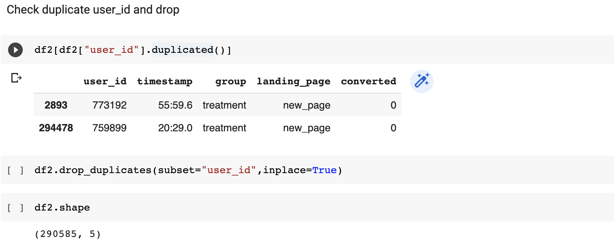

E-commerce A/B Testing
(A/B Test, Hypothesis Test, Python)
Background
An e-commerce company has developed a new web page and try to understand if they should implement this new page, keep the old page, or perhaps run the experiment longer to make their decision by running A/B testing.
Experiment Design
1.Objective & Key Metrics
To identify the question, the comapny try to figure out which page version is "better". We need to quantify better and translate into specific metrics. As design the new page to increase the number of users who "convert," meaning the number of users who decide to pay for the company's product, user conversion is the most important metric at this time. So our question: Is the user conversion rate for the new page higher than the old one? And in this case our Variant is the new page vs. old page, and use users as Randomization units.
2.Target Population
Another question for the expirment is that do we want to target all the users or specific segment of users. Choose the right target population is important for the a/b test, let's see one example here. The demo shows an a/b testing on the check out page to figure out whether the new "similar product" feature could generate more revenue.
By analyzing the user journey, we could know that if we use the top of the funnel as target population, we will get most users but large proportion won't see the feature we want to test at all. A more reasonable option is to consider those users who start checkout process as target population because they all will see the new feature.By analyzing the user journey, we could know that if we use the top of the funnel as target population, we will get most users but large proportion won't see the feature we want to test at all. A more reasonable option is to consider those users who start checkout process as target population because they all will see the new feature.
3.Sample Size
We require three parameters to determine the sample size of a test
- Practical significance boundary: 1%
- Power(1 - β) or Type II error rate β, usually β = 0.8
- Significance level α, usually α = 0.05
Now we only need to find out the two parameters: 1. Sample variances can be found in the dataset. 2. The difference between treatment and control groups, which is the Practical significance boundary. And We need more samples if the sample variance is larger, and we need fewer samples if the delta is larger.
4.Duration
Then we need to decide how long to run the experiment, and consider at least 4 factors:
- Ramp-up plan: Expose to a small population, gradually increase percentage
- Day of week effect: People behave differently weekday & weekend, recommended run experiment for >=1 week
- Seasonality: Holiday season, like Black Friday for E-commerce, data during holidays cannot be used for analysis, run experiment longer
- Primacy and novelty effects: Users respond to changes differently
Experiment Analysis
Dataset
Check duplicate users and mismatch between group and page
User Conversion rate
The plot shows that User Conversion Rate is lower in the Treatment group, but we still need to test if it's statistically significant.
Sanity Check
Before we start Hypothesis Testing, we need to check Number of users assigned to groups to make sure the exprrement is reliable.Hypothesis Testing
Typically, we recommended launching a change when both statistically significant and practically significant. Based on the results, the observed difference(-1.31%) in conversion rate is not statistically significant. There is no real difference in performance between the two groups.
Heterogeneous Treatment Effect
In addition to the experimental results, we also want to investigate whether the treatment has different effects on different user groups. To achieve this, I conducted heterogeneity analysis by adding interaction terms between users' experimental groups and their user groups(user country) in the linear model with covariate adjustment. In this project, the result shows that heterogeneous treatment effect is not statistically significant.
Recommendations
Based on the experiment result, we should keep using the original page version and maybe run a follow-up test with more power.